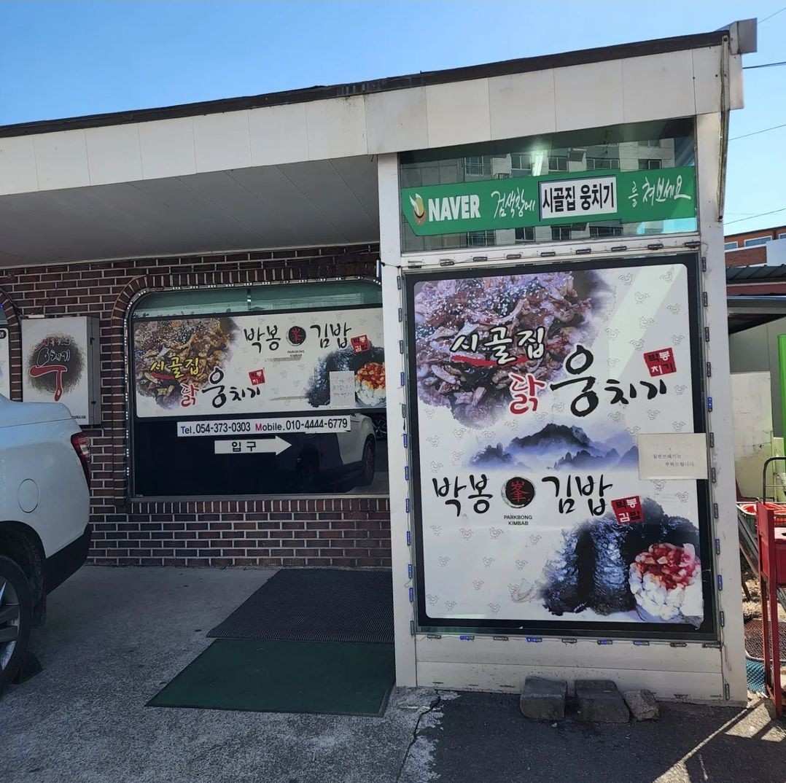
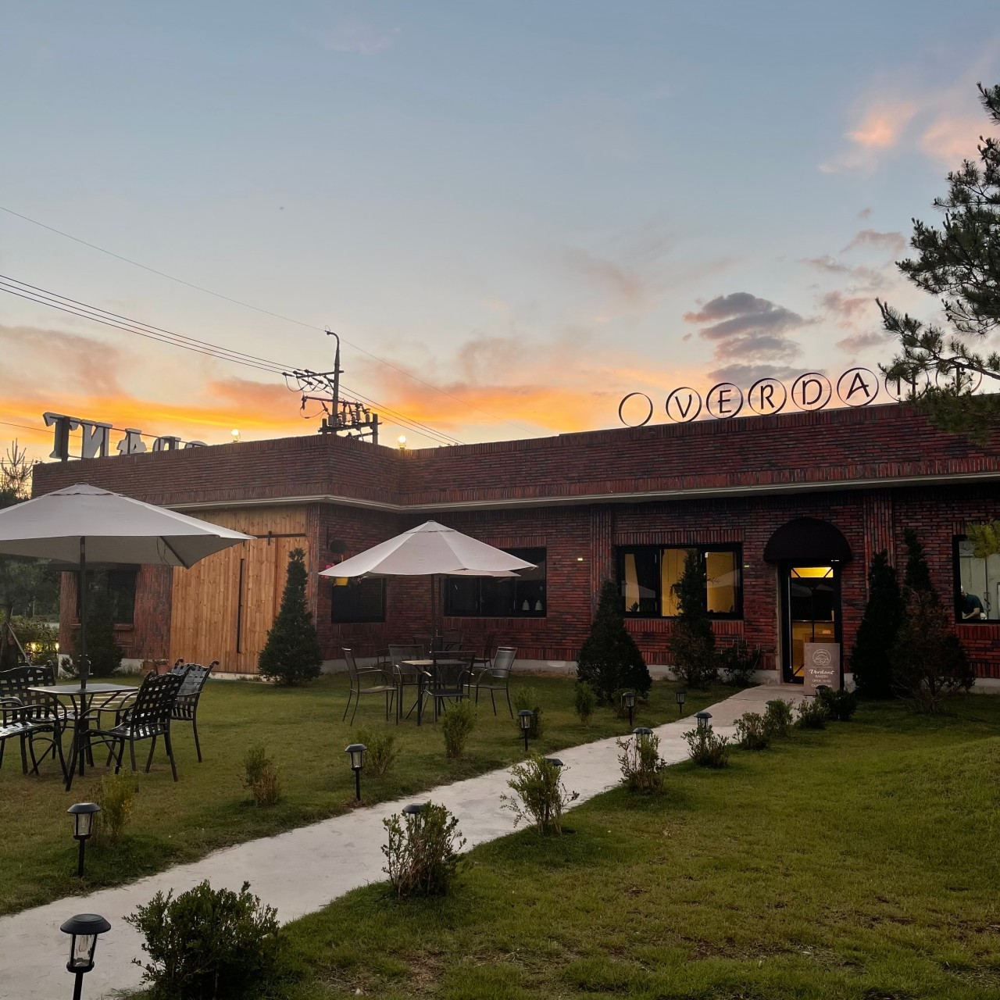

청도군에서 직접 사육한 1++ 등급 청도 한우만을 사용하는 한우 전문점입니다. 청도 특유의 맑은 공기와 청정 환경에서 자란 한우는 육질이 부드럽고 풍미가 깊습니다. 직화구이로 즐기는 등심과 갈비는 청도 여행의 필수 코스로 손꼽힙니다. 된장찌개, 잡채, 계절 나물 등 푸짐한 밑반찬과 함께 정갈한 한 상이 차려집니다.
주변 관광지: 청도읍성(도보 10분), 청도소싸움경기장(차량 5분), 청도 프로방스(차량 15분)
인근 맛집: 청도막걸리촌(차량 3분), 반시골 향토식당(도보 15분)
인근 숙박: 청도온천관광호텔(차량 10분), 청도가족호텔(차량 5분)

반시골 향토식당
주소
경상북도 청도군 청도읍 고수길 45
연락처
054-371-2222
운영시간
10:00 ~ 20:00 (매월 첫째·셋째 월요일 휴무)
대표메뉴
반시삼겹살, 감잎밥, 감자국, 청도 된장찌개
청도의 특산물인 반시(감)를 활용한 다양한 향토 음식을 선보이는 식당입니다. 감잎을 활용한 감잎밥과 반시로 숙성시킨 삼겹살이 대표 메뉴로, 달콤하면서도 깊은 맛이 일품입니다. 현지인들이 즐겨 찾는 정통 청도 향토 음식점으로 모든 재료를 청도에서 직접 조달합니다. 가성비 좋은 청도 향토 정식(12,000원)도 인기입니다.
주변 관광지: 청도읍성(차량 5분), 섶마리한옥마을(차량 10분)
인근 맛집: 청도한우본가(차량 15분), 청도막걸리촌(차량 10분)
인근 숙박: 청도 하나펜션(차량 10분), 섶마리 한옥체험관(차량 10분)

청도 막걸리촌
주소
경상북도 청도군 화양읍 교촌리 일대
연락처
054-370-6114 (청도군청 관광과)
운영시간
점포별 상이 (일반적으로 11:00 ~ 22:00)
대표메뉴
청도 감막걸리, 파전, 두부김치, 도토리묵
청도 와인터널 인근 청도역 주변에 형성된 막걸리 골목입니다. 청도에서만 맛볼 수 있는 감막걸리와 직접 빚은 누룩 막걸리를 즐길 수 있습니다. 파전, 두부김치, 도토리묵 등 다양한 안주와 함께 소박하고 정감 있는 여행의 맛을 느낄 수 있습니다. 청도역에서 도보 5분 거리에 위치하여 교통도 편리합니다.